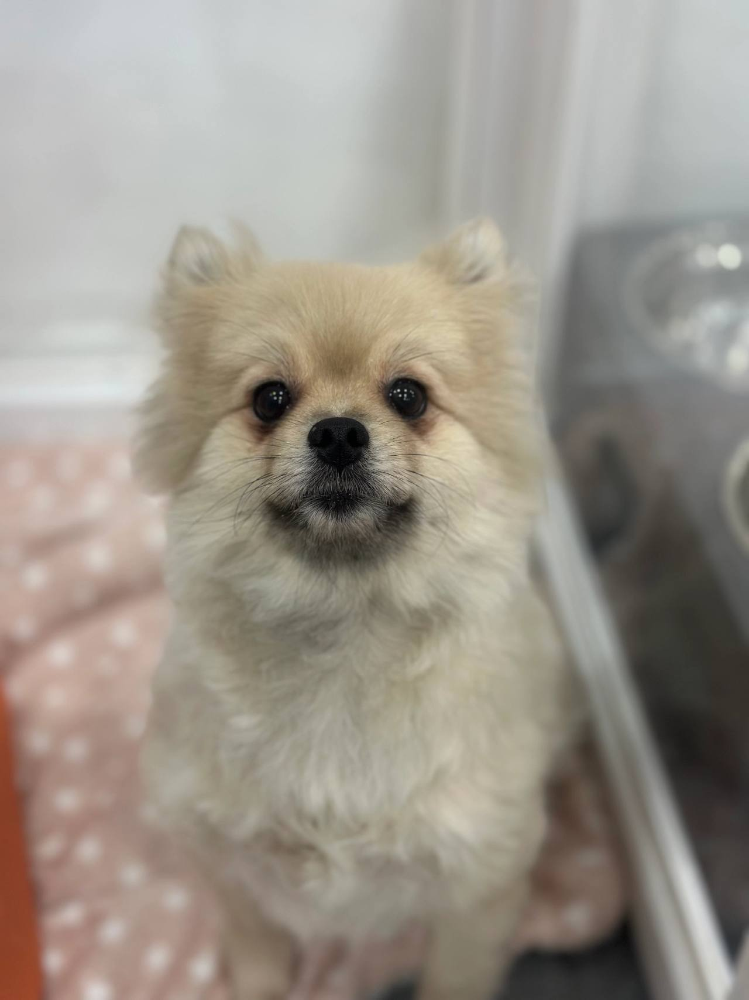
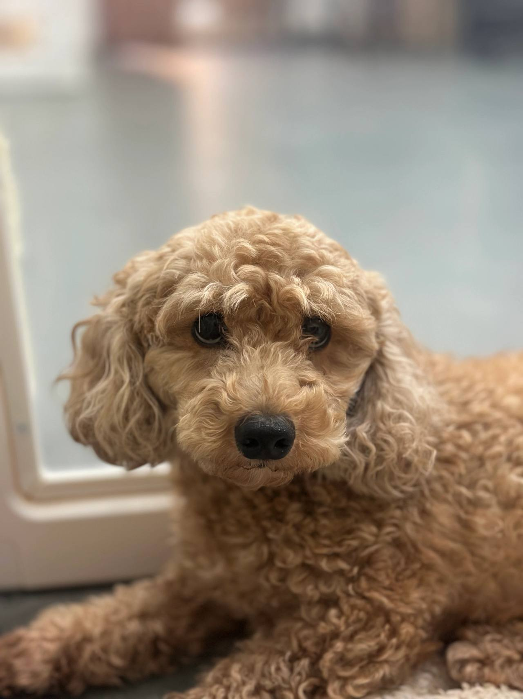

임신, 출산
출산 전후로돌보기 어렵거나아기와 함께 두기불안할 때
LOCAL GUIDE
반려견을 들이는 것은 가정에 새로운 구성원을 들이는 것과 같으므로 온 가족의 생활 리듬 조율이 필요합니다. 금전적 가치로 생명을 거래하는 관점을 버리고 평생을 책임질 각오로 임해야 합니다. 충분한 설명과 대면 만남을 거친 뒤 진지하게 입양 여부를 확정하시기 바랍니다.
REHOMING
개인적인 사정으로 반려견과 더 이상 함께하기 어려운 상황일 때 체계적인 절차를 거쳐 아이를 입소시키고 무료 분양으로 보금자리를 이어 줍니다. 전화 상담(0505-707-0401)을 통해 현재 상황을 파악하며 무리한 수용 대신 여건에 맞춰 신중하게 돌봄을 시작합니다.
갑작스러운 환경 변화 속에서도 아이가 평온함을 잃지 않도록 세심하게 보살피며 다음 행보를 준비합니다. 이는 책임 있는 보호 속에서 아이에게 새로운 가족을 만날 기회를 열어 주는 과정입니다.
새로운 가족을 찾아 주는 일은아이에게 건넬 수 있는마지막 선물입니다.
출산 전후로돌보기 어렵거나아기와 함께 두기불안할 때

함께 살다동물 알러지가 나타나생활이 어려워졌을 때

해외로 데려갈 수 없거나이사한 집에서함께하기 어려울 때군 입대와 오랜 부재도같은 경우에 가깝습니다.

보호자가 아프거나연로해졌을 때아이도 나이가 들어집에서 돌보기 어려울 때
상담부터 입양 공고까지, 순서는 같습니다.

유선 상담을 통해 나이, 지역, 질병 유무와 특이 상황을 확인합니다. 센터 내부 공간을 종합적으로 살펴본 뒤 1차 입소 가능 여부를 결정합니다.

직접 센터로 방문하시거나 이동 지원 일정을 조율하여 선택합니다. 전국 어디든 전담 인력이 무상으로 픽업하여 이동을 돕습니다.

제반 확인 사항과 규정된 비용 조항을 면밀하게 검토합니다. 안내 내용을 충분히 숙지한 후 정식 입소 동의서를 작성합니다.

건강 상태와 함께 대형견, 소형견, 노령견 여부를 다각도로 살핍니다. 확인된 상태에 맞춰 아이가 안전하게 머물 전용 공간을 정합니다.

안정적인 생활 속에서 아이의 사진과 영상을 정성껏 촬영합니다. 새로운 인연을 맞이할 수 있도록 사전 자료를 차분히 정리합니다.

공식적인 입양 공고를 등록하여 아이의 다음 여정을 이끕니다. 적합한 보금자리를 찾아 새로운 가족과 따뜻하게 연결됩니다.
개별 일과와 성향 점검을 거쳐 생활 적응을 준비하고 있는 강아지 현황입니다.
양육 환경과 반려견의 성향이 부합하는지 점검하는 순서입니다.
주거 형태, 가족 구성원의 동의 여부, 돌봄 시간 등을 유선 상담을 통해 점검합니다.
보호소에 방문하여 개체의 건강 이력과 행동 특성을 확인하고 직접 대면 시간을 가집니다.
지속 양육에 관한 세부 항목을 확인하고 확인 서류를 작성한 뒤 가정을 이룹니다.
산책하고, 밥 먹고, 미용하는 보호소의 하루입니다. 사진을 누르면 그 이야기를 볼 수 있어요.
안내
영통 내에서 생명 존중의 가치를 실천하며 가족을 맞이하려는 분들의 문의가 이어지고 있습니다.
0505-464-1004로 생활 이야기를 먼저 나눕니다. 어떤 강아지을 찾는지, 돌볼 시간은 어떤지 듣고 만날 수 있는 아이를 고릅니다. 영통강아지무료분양 비용을 이 페이지에서 정하지는 않습니다.
입양을 결정하기 전 아이가 지금까지 받아온 기초 예방접종 차수와 내외부 구충 이력을 정확히 서류로 확인해두는 것이 안전합니다. 종합백신(DHPPL), 코로나 장염, 켄넬코프 등 필수 접종 단계와 항체 형성 여부를 의료 수첩을 통해 파악하면 향후 추가 접종 계획을 수월하게 수립할 수 있습니다.
기존에 섭취하던 사료의 브랜드와 입자 크기, 하루 급여량 및 배식 주기 또한 새로운 보호자가 필히 숙지해야 할 핵심 정보입니다. 영통 내에서 영통강아지무료분양 절차를 준비하시며 이전의 배변 습관(패드 사용 여부, 실외 배변 선호 여부)을 파악해두면 실내 적응기 동안 겪을 수 있는 혼란을 크게 줄일 수 있습니다.
기존 급여 사료에서 다른 사료로 변경하고자 할 때에는 장내 미생물 적응을 위해 최소 일주일 이상의 기간을 두고 기존 사료와 점진적으로 섞어서 급여해야 장염을 방지할 수 있습니다.
반려 생활을 유지할 수 없는 극단적 한계 상황에 놓여 보호소 입소를 고민하고 계신다면, 정식 절차를 통해 파양 접수를 진행해야 합니다. 입소 전용 번호인 0505-707-0401로 문의하시면 아이의 건강 및 접종 이력을 바탕으로 정식 입소 가능 일정을 안내받으실 수 있습니다.
보호 공간의 한계와 감염병 예방을 위해 당일 무조건적인 즉시 입소는 엄격히 금지되며, 격리실 준비와 사전 진단이 선행되어야 합니다. 영통 지역에서 영통강아지무료분양 관련 문제를 겪고 계신 분들도 체계적인 보호 시스템 안에서 아이가 상처받지 않도록 전문 상담 창구를 거쳐주시길 당부드립니다.
입양 문의는 0505-464-1004, 입소 및 파양 안내는 0505-707-0401로 세분화되어 운영되고 있으니 혼선 없이 연락 주시기 바랍니다.
또 다른 입양 희망자는 대면 미팅 당일, 입양을 염두에 두었던 소형 강아지 친구의 오른쪽 뒷다리 걸음걸이가 다소 부자연스러운 점을 발견했습니다. 담당 관리자는 숨김없이 해당 아이가 슬개골 탈구 1기 상태이며, 미끄럼 방지 매트 시공과 체중 관리가 필수적이라는 사실을 의무 기록과 함께 고지했습니다.
신청자는 솔직한 정보 공개에 깊은 신뢰를 느꼈고, 입양을 포기하는 대신 집안 전체에 논슬립 매트를 완비한 후 아이를 맞이하기로 결심했습니다. 영통 중심에서 투명한 영통강아지무료분양 상담을 거친 덕분에, 보호자는 향후 발생할 수 있는 관절 질환에 대해 사전에 마음의 준비와 경제적 대비를 마칠 수 있었습니다.
단점을 감추지 않고 투명하게 공유하는 정직한 절차만이 보호자와 반려동물 간의 단단한 신뢰를 형성하는 초석이 됩니다.
불가피한 질병, 해외 이주, 경제적 파탄 등 피치 못할 사유로 더 이상 가족을 보살피기 힘든 한계 상황에 부딪힐 때가 있습니다. 거리로 유기하거나 방치하는 비극을 막기 위해 체계적인 입소 및 파양 안내를 담당하는 전용 소통 창구(0505-707-0401)가 상시 운영되고 있습니다.
입소 과정에서는 아이의 건강 상태, 백신 접종 내역, 기질적 특성에 대한 솔직한 정보 제공이 이루어져야 다음 단계의 안전한 보호가 가능해집니다. 영통 인근에서 영통강아지무료분양 연계가 필요한 상황이라도 당일 즉각 입소는 불가하며 사전 예약 및 적합성 검토를 거쳐야 함을 양지하시기 바랍니다.
아이의 행복을 위해 입양을 문의하는 번호(0505-464-1004)와 입소를 안내하는 번호(0505-707-0401)를 목적에 맞추어 명확히 구분해 이용해 주시기 바랍니다.
입양 당일부터 2주 동안은 아이가 평생 살아갈 가정의 규칙을 배우고 심리적 안정감을 구축하는 가장 중요한 골든타임입니다. 과도한 애정 표현은 오히려 분리불안을 부추길 수 있으므로 규칙적인 생활 리듬을 만들어주는 데 집중해야 합니다.
정해진 위치에서 정해진 시간에 식사를 제공하고, 배변 실수를 하더라도 묵묵히 치워주며 배변 장소를 자연스럽게 인식시켜야 합니다. 영통의 새로운 품에 안긴 영통강아지무료분양 인연이 평생의 동반자로 거듭날 수 있도록 아래의 초기 적응 수칙을 엄수해 주시기 바랍니다.
차분한 인내와 일관성 있는 태도만이 낯선 환경에 놓인 아이의 마음을 여는 유일한 열쇠입니다.
생후 수개월의 유년기 개체와 성견, 그리고 노령견은 하루 동안 요구하는 에너지 소모량과 돌봄의 밀도가 완전히 다릅니다. 성장기 자묘나 자견의 경우 잦은 배식과 세심한 사회화 놀이가 필수적인 반면, 성견은 이미 형성된 기질에 맞추어 안정된 루틴을 조성해주는 것이 중요합니다.
소형견, 중형견, 대형견 등 체급에 따라 필요한 실내 활동 반경과 산책 강도 역시 크게 상이하므로 보호자의 신체적 여력이 뒷받침되어야 합니다. 영통 생활권에서 알맞은 영통강아지무료분양 방식을 고민하신다면, 본인의 운동 패턴과 주말 여가 시간을 아이의 에너지 레벨과 일치시키는 현명한 선택이 필요합니다.
보호자의 라이프스타일과 맞지 않는 과도한 활동량 매칭은 양측 모두에게 만성적인 피로와 스트레스를 유발할 수 있으므로 현실적인 접근이 필수적입니다.
체계적인 입양 시스템은 아이가 다시는 이별의 아픔을 겪지 않도록 보호자와 반려동물 쌍방의 적합성을 빈틈없이 확인하는 안전망입니다. 무분별한 당일 당석 분양을 지양하며, 사전 유선 검토부터 사후 모니터링까지 전 과정을 투명하게 매뉴얼화하여 운영하고 있습니다.
영통 생활권에서 새로운 가족을 찾기 위해 영통강아지무료분양 절차를 밟고자 하시는 분들은 각 단계별 필수 요구 요건을 사전에 숙지하셔야 합니다. 상담 접수부터 실물 만남, 환경 심사, 그리고 책임 비용 정산까지 체계적으로 연결되는 일련의 흐름을 안내해 드립니다.
생명을 맞이하는 과정에 소요되는 시간은 건강한 반려 생활을 유지하기 위한 가장 값진 투자이자 약속입니다.
온라인 사진에 올라온 인형 같은 외모에 매료되어 즉일 데려오기를 희망했던 한 신청자는 입양 전문 번호(0505-464-1004)로 전화를 걸어왔습니다. 당일 인계가 불가능하다는 원칙에 처음에는 불만을 표했으나, 상담원과의 30분에 걸친 면담을 통해 자신의 준비 상태를 되돌아보게 되었습니다.
상담원은 아이가 앓았던 피부염 병력과 하루 세 번 필요한 약물 급여, 그리고 털 빠짐의 정도를 가감 없이 솔직하게 설명해 주었습니다. 영통 거주지에서 무턱대고 영통강아지무료분양 절차를 밟으려 했던 신청자는 비로소 반려 생활의 현실적인 무게를 깨닫고 가족들과 상의할 시간을 갖기로 결정했습니다.
사진 한 장의 환상에서 벗어나 한 생명의 현실적인 요구 조건을 직시하게 돕는 유선 상담의 중요성이 입증된 순간이었습니다.
새로운 가정으로 이동할 때 환경 변화로 인해 아이의 소화 기관은 평소보다 훨씬 민감해진 상태에 놓이게 됩니다. 보호소에서 급여하던 사료와 전혀 다른 제품을 첫날부터 급여하면 급성 소화불량이나 묽은 변을 유발할 위험이 대단히 높습니다.
또한 배변 패드에 길들여진 아이인지, 실외 잔디밭에서만 배변을 해결하던 아이인지를 미리 파악해야 실내 배변 유도제를 쓸지 정기 산책을 나갈지 결정할 수 있습니다. 영통 환경에서 영통강아지무료분양 정착을 성공시키기 위해, 기존 생활 습관 데이터를 인계받아 첫 주의 양육 매뉴얼로 삼으셔야 합니다.
기존에 먹던 사료를 일정 분량 확보해 점진적으로 섞어 교체해 나가는 것이 아이의 장 건강을 안전하게 지키는 정석입니다.
입양 계약서 체결 및 동물등록 진행
소유자 변경을 위한 동물등록 서류를 정식 작성하고 재유기 및 재파양 방지 조항이 명시된 계약서에 날인합니다.
유선 사전 심사 및 반려 자격 스크리닝
신청자의 과거 반려 경험, 경제적 여력, 거주지 환경을 종합적으로 검토하여 1차 입양 적합성을 평가합니다.
보호소 현장 방문 및 개체 대면 교감
사진만으로 결정하지 않고 보호소를 방문하여 아이의 성격, 반응도, 에너지 레벨을 직접 마주하며 확인합니다.
영통강아지무료분양는 어디서 문의하나요?입양 상담 전화는 0505-464-1004입니다. 영통에서 강아지 입양을 알아보면 생활을 듣고 만날 아이를 안내합니다.
영통에 따로 적힌 보호소 주소가 있나요?영통강아지무료분양 페이지는 영통 상담 안내입니다. 이 글에 없는 주소를 그 지역 지점이라고 안내하지 않습니다.
전화하면 바로 진행되나요?자리가 없거나 생활이 맞지 않으면 바로 진행되지 않습니다. 전화로 확인한 뒤 만남을 정합니다.
입양 문의와 사전 상담은 어디로 연락해야 하나요?입양 관련 전용 상담 창구인 0505-464-1004 유선 번호로 연락하시면 상세한 자격 요건과 절차를 안내받으실 수 있습니다.
온라인 공고의 사진만 보고 즉시 입양을 확정해도 되나요?사진 속 모습과 실제 기질이나 활동량에 큰 차이가 있을 수 있으므로 현장 방문을 통한 직접 대면 교감이 필수 조건입니다.
지방 거주자의 경우 자택 픽업이나 탁송으로 아이를 받을 수 있나요?생명을 직접 보지도 않고 물건처럼 택배 배송하듯 보내는 방식은 절대 불가능하며 반드시 현장 대면 교감을 거쳐야 합니다.
입양을 진행할 때 지참해야 하는 서류는 무엇인가요?입양 희망자의 본인 확인 신분증 사본, 거주지 형태를 증빙할 수 있는 서류, 동물등록 변경을 위한 서류가 필요합니다.





CONTACT
입양과 입소, 전국 어디서든 전화로 상담합니다.
전국 입소문의